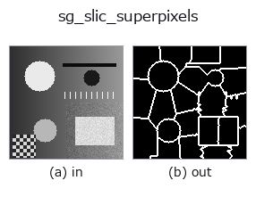

segment op• Data kinds: image → region
• Call: fullseye.apply(img, "sg_slic_superpixels", a=0.5, b=0.5) (2-D model = एक image + दो scalar knobs a,b∈[0,1])

*Figure synthetic 128×128 input पर सच में चलाकर मिला output है। बाईं ओर input, दाईं ओर output। Point clouds ऊपर से देखे गए scatter के रूप में (brightness = z), 1-D series line के रूप में, volumes z दिशा में maximum-intensity projection के रूप में, videos बीच के frame के रूप में, complex images amplitude के रूप में, और जो return values चित्र नहीं बन सकते वे स्वयं values के रूप में दिखाए जाते हैं।*
Knob a को बदलकर (0.1 / 0.5 / 0.9, दूसरा knob default पर):
▸ sg_slic_superpixels: knob a को बदलने का figure (docs site)
*Knob b output नहीं बदलता (मापा गया: 0.1 / 0.5 / 0.9 पर एक जैसा)।*
दूसरी images पर भी (synthetic scene / photo / coins। ऊपर की row में inputs, नीचे की row में उनके outputs। Knobs default पर):
▸ sg_slic_superpixels: दूसरी images पर output (docs site)
*चौथा column colour (H,W,3) input है। यह op channels को पार किए बिना colour संभालता है (colour channel को तीसरे spatial axis की तरह convolve नहीं करता)।*
SLIC विधि से superpixel over-segmentation का boundary grid लौटाता है (skimage.segmentation.slic, HALCON में इसके समकक्ष कोई operator नहीं)।
a (0 से 1) segments की संख्या और compactness दोनों को बदलता है: जितना बड़ा, segments उतने कम (n_seg = max(2, round(6+(1-a)*40))) और compactness उतनी अधिक (compactness = 0.01 + a*0.2, आकार अधिक चौकोर और व्यवस्थित)। b उपयोग नहीं होता। return value superpixels की boundary lines (बाहरी contour) को trace करने वाला region है; compactness जितनी कम, boundary उतनी आसानी से luminance edges पर snap होती है।
• gallery2d_segmentation family guide
• Sample data catalog (DL URL / license) — 2-D के लिए skimage.data (BSD/public) + synthetic, 3-D के लिए real data sources (Stanford/PDS आदि) के DL URL।
• Operators का स्रोत और संदर्भ — इस op family के मूल research/methods के स्रोत।
• Algorithm का मानक स्रोत (लेखक, वर्ष) और उपयोग ऊपर की family usage guide में दिए गए हैं।
नीचे का program सच में चलता है, यह जाँचा गया है (figure वाला ही input)। Studio की help में यह block buttons बन जाता है, जिनसे इसे वहीं load करके चलाया जा सकता है।
sg_slic_superpixels 0.50 0.50
▸ यह pipeline load करें · Load करके चलाएँ
• gallery2d_segmentation — py -3.11 examples/gallery2d_segmentation.py
region को input के रूप में लेते हैं)identity · reg_erode · reg_dilate · reg_open · reg_close · fill_holes · select_largest · remove_small
segment)sg_felzenszwalb · sg_gmm_segment · sg_kmeans_intensity · sg_region_growing_seeded · sg_normalized_cut_2 · sg_watershed_gradient
*Provenance: ops.py — 2D operator registry. यह per-op note tools/opdocs.py md से अपने-आप generate होता है (हाथ से edit न करें)।*
© 2026 Kazufumi Furuse — Fullseye operator documentation. Licensed under Apache-2.0.